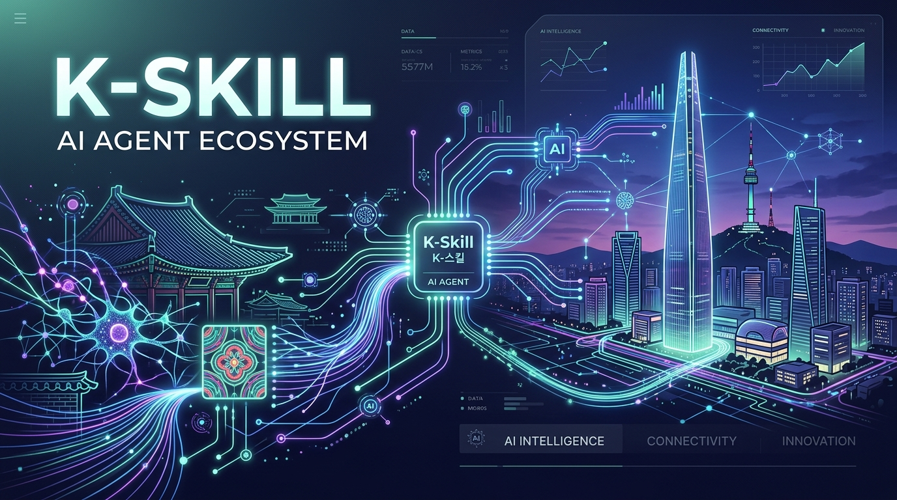
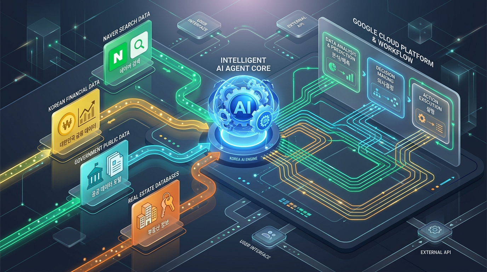

글로벌 LLM 에이전트(Claude, GPT, Gemini)가 넘지 못했던 한국 도메인 데이터의 벽을 허물고,
공공데이터·포털·금융·법률 지능을 부여하는 오픈소스 표준 스킬 컬렉션
0
등록 스킬 수
0
GitHub Stars
0
누적 Commits
0
태스크 완결율 (%)

CHALLENGES & MOTIVATION
글로벌 에이전트의 "한국형 장벽"
세계 최고 성능의 AI 코딩 에이전트도 한국 로컬 환경에서는 극심한 할루시네이션과 정보 수집 실패를 겪습니다.
🔒
폐쇄형 포털 & 동적 렌더링
네이버 블로그, 카페, 뉴스 등 국내 트래픽 80% 이상의 플랫폼이 iFrame, 동적 JS 또는 검색 차단 정책으로 보호되어 일반 웹스크래핑 에이전트 접근 불가
🏛️
공공행정·법률망 레거시
대법원 법원경매(PGJ141M00 XML), 건축물대장, 정부24 등 복잡한 XML 파라미터와 접근성 트리 부재로 기존 LLM이 구조를 파악하지 못함 (Issue #167)
🧩
에이전트 규격 파편화
Claude Code, Cursor, Windsurf, OpenAgent 등 에이전트마다 도구 호출 규격이 달라 동일한 한국형 데이터도 중복 개발해야 하는 생산성 낭비
GOOGLE FLOW ARCHITECTURE
Google Flow 파이프라인 : 인텔리전트 에이전트 코어
단일 명령으로 호출되는 통합 CLI 어댑터와 자율 오케스트레이션 엔진의 동작 메커니즘

🤖
Agent Core
Claude / Cursor
⚡
K-Skill CLI
@nomadamas
🌐
실행 클러스터
네이버·법원·한은
✨
정규화 JSON
컨텍스트 주입
// 💡 상단 노드를 클릭하면 각 단계별 실제 실행 로그와 I/O 데이터를 확인할 수 있습니다.
[Agent Dispatch] User Query: "수원지방법원 다음 주 아파트 경매 공고 요약해줘"
> Routing via K-Skill CLI: court-auction-notice-search
DEEP DIVE: CRAWLED REAL-WORLD SKILLS
실제 수집 데이터 기반 핵심 스킬 분석
Firecrawl로 수집된 K-Skill 리포지토리의 대표 모듈별 아키텍처 및 구현 방식
네이버 뉴스 검색naver-news-search
포털 실시간 속보 수집. 카테고리 필터링 및 본문 클러스터링으로 중복 기사 제거 후 핵심 요약 추출.